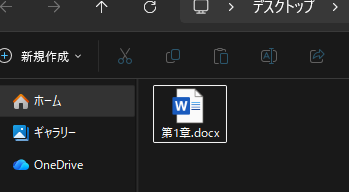
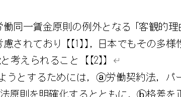
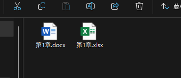
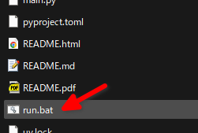
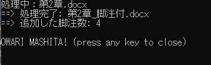
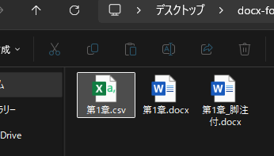

README
data フォルダ内のMicrosoft Word文書（.docx ファイル）に半自動で脚注を一括設定する。
動作環境
プロジェクトマネージャー uv を使用。
インストールコマンドは下記。
powershell -ExecutionPolicy ByPass -c "irm https://astral.sh/uv/install.ps1 | iex"
使い方
手順1 data に処理対象のファイルをコピーする

このとき、脚注を入れたい箇所を 【【1】】 や 【【2】】 のように墨つきパーレンを二重にして指定する。

手順2 脚注の対応表CSVを作成する
1列目が注番号、2列目が注内容のCSVを作成し、 docxファイルと同じ名前で保存する。

上図のようにMicrosoft Excelで作成した場合、保存時に CSV UTF-8 (コンマ区切り) を選択する。


手順3 run.bat をダブルクリックする

黒い画面が開いて処理が始まり、最後まで行くと OWARI MASHITA! (press any key to close) と表示されるので何かキーを押すと画面が閉じて終了する。

最終的に、元の文書と同じフォルダに _脚注付 という名前で新規作成される。
